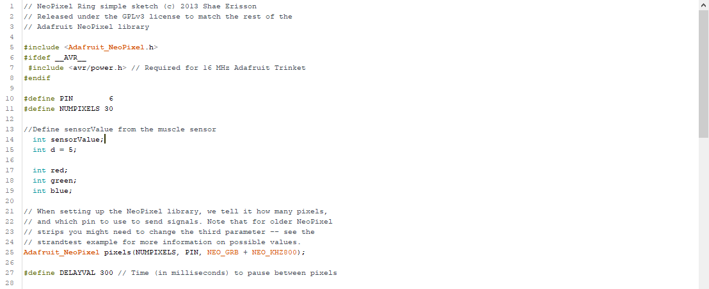
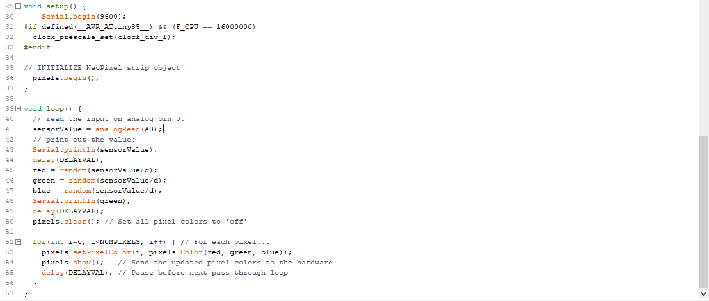
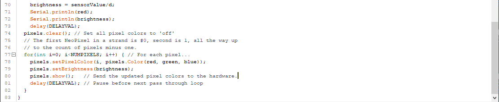
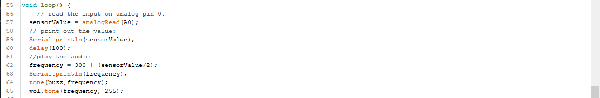
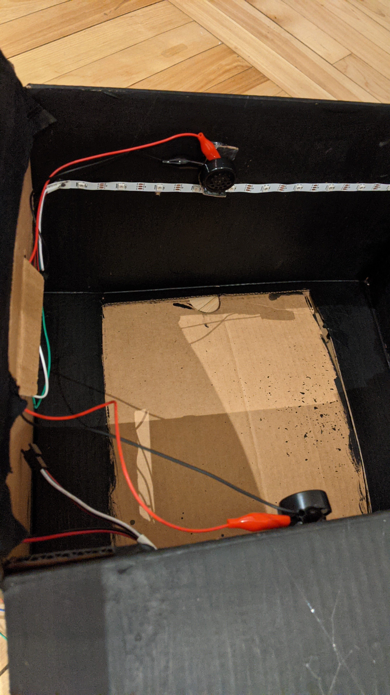

PROGRESSION
I start by connecting the Myoware to Arduino Uno and make sure that the EMG signal is detected.
Then I attached the RGB LED strip to the Arduino Uno. The light is first randomized and very bright till the user’s muscle movement is detected. The light then changes its color and brightness according to the EMG signal. I had difficulty deciding the pattern of the lighting. I finally decided on a fading pattern.
I use the Adafruit's neopixel library to create the transition effect in the LED lights
 After some testing, I realize that the light is too bright. I then adjust the code so that the user's muscle movement can influence the lights' intensity.
After I make sure that the LED lights are functioning correctly with the Myoware sensor, it is time to create the frequency using the speaker.Both speakers are connected to Arduino Uno through the breadboard.

I am also using the volume library to control the volume. The goal is to have a very subtle frequency that is not disturbing.
I recorded everything with my cheap Android, so we can't hear the frequency. But here is a recording of the frequency in action.
Here is the fully functional circuit in action
For the “house”. I painted the cardboard black by using gesso. I then put fabric on the inside to make sure that the material isn’t too rough on the skin. I also built a small “balcony” in the back to fit all the controllers/sensors. After making sure that the circuit is functioning correctly, I glued the LED light strip and the speakers inside the house. Then I attach their wires through a hold at the back to the “balcony”.


To decorate the installation, I use fake moss and polyester as clouds to create a more organic look.
Finaly, to hang the house. I use gorilla tape to create a "hook" on the ceiling and pass it through with a string to hang the house up.
Here is the installation without user interaction in a dim light
The installation without user interactin in a completely dark environment
The installation from the user's perspective